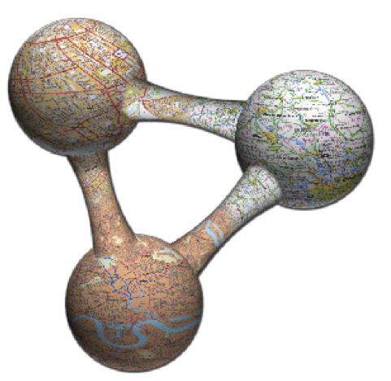
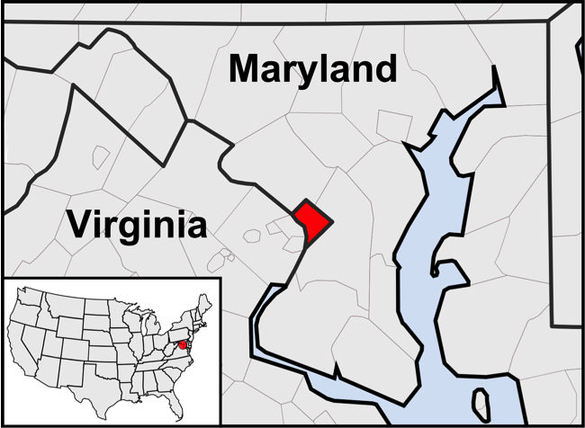

Civil-Military Operations
Linked Data Use Cases
GeoSemantics Summit 2015

|
@timothylclark | @milcord |
Introduction
- CMO needs Linked Data for its independent actors
- Standards for syntax mature, but not so for semantics
Two ways of looking at the CMO world
Closed World Assumption
|

|
Open World Assumption
|

|
Syntactic Interoperability
|
|
|

|
|
... |
CMO's Guiding Documents
Civil IPB and ASCOPE Taxonomy
Humanitarian Exchange Language (HXL)
Additional Vocabularies and Ontologies
- Management of a Crisis
- PROV-O
- schema.org
- disease-ontology.org (Public Health)
- VectorBase (Public Health)
Goal: Machine Reasoning
Hurricane_Boris hasImpactAreaGeometry [WKT polygon]
Fairfax_VA hasGeometry [WKT boundary polygon]
Fairfax_VA hasPopulation Pop_A
Pop_A hasResiliencyMeasure ‘‘Low’’
Through a combination of logical rules, we can infer:
Hurricane_Boris affects Pop_A
Linked Data
Cool icon courtesy of ASOM-MENA.
Why do this?
- More sources of data and knowledge for the graph
- Leverage data sources that are not CMO-related, yet still relevant
- Data stays with the owner, but exposed for the community
Are we talking about the same thing?
- Using HTTP, dereferenceable URIs for generic, flexible publishing of self-describing data (vs documents)
- Allows us to refer to canonical representations (identity) of operationally-relevant things

|
 |
Canonical <> The Only One... ...because of URI Aliases
What's your source?

Trust in source through cryptography
Trust that inferences/derived statements are being made using sound logic
GeoSemantic Requirements
- Nearby, Near to, North of...and relation to topology
- gn:nearbyFeatures
- Describing of scale
- Mereology (Has parts, Is part of)
- Geospatial filtering using context and geometry
- *Node/edge recommendations for common relationships
Place Names/Toponyms resolution
- Multiple "canonical" sources (gn, Google, Yahoo, OSM)
- Missing associated geometries, need to get from other sources
- Handling imprecise or nonexistent geometries (e.g Philippines Barangay)
- Quattroshapes, GADM-RDF project
Building a CMO Knowledge Graph

“What are the immediate humanitarian needs in Tacloban district?”
Next Steps
- Develop domain ontologies in earnest
- Conversion tools for first mile (new HXL?)
- Find trustworthy publisher organizations willing to take on hosting duties
- Make it work in disconnected settings; only send what's necessary over the internet pipe
- Build tools to hook into this large CMO Knowlege Graph
The building blocks are there. We need to figure out how to combine them.
Thank you
|
|
@timothylclark | @milcord |